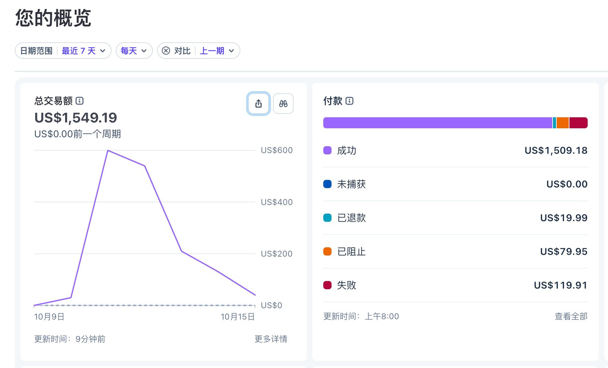
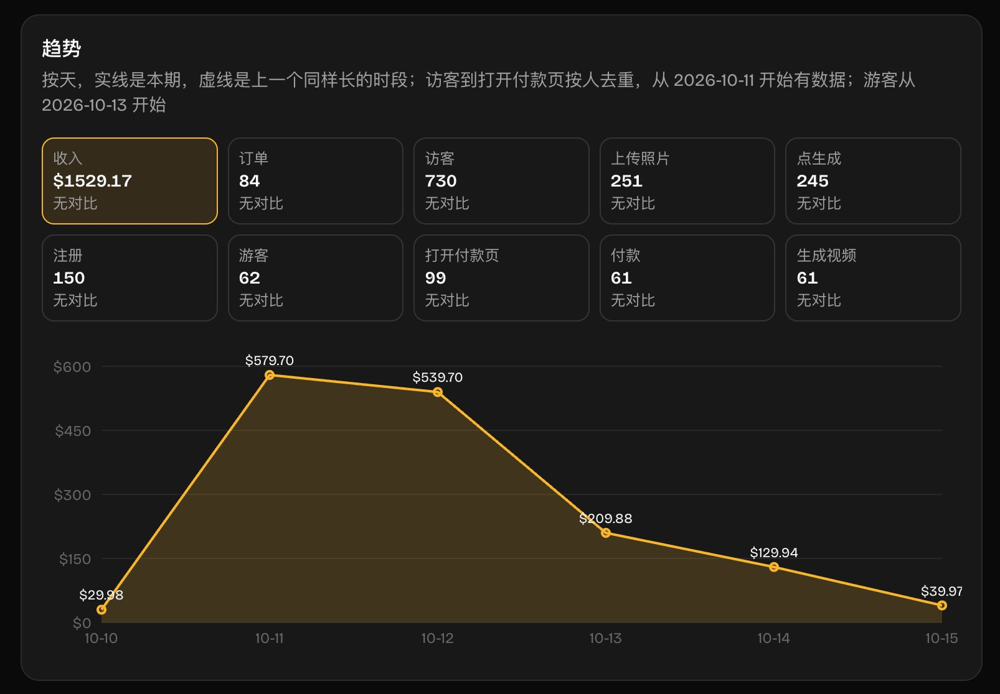
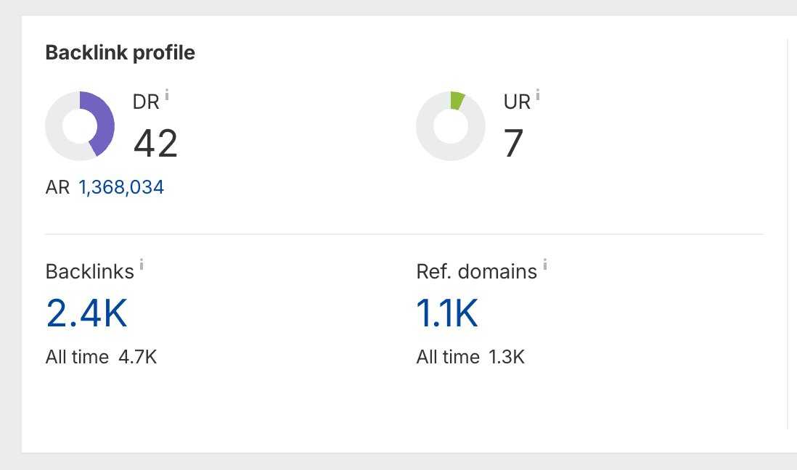
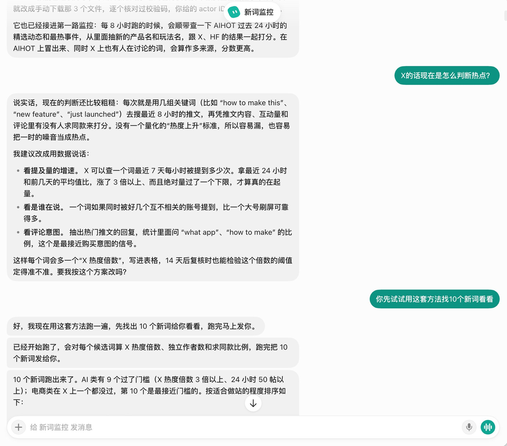

开始上站到目前 5 天时间，我的第 1 个 AI 付费工具站实现了收入突破 1500 刀，我的心情不亚于我做跨境电商独立站突破万刀时的激动。对我来说意义重大，所以特别记录一下这次上站的经验复盘，希望能对想了解和实践 AI 网站出海的朋友有所帮助。

0 先看数据：5 天收入、单数、客单价、成本
这 5 天时间我看了下 Stripe 后台的收入统计，截止目前收入总共 1549 美金，上站第二天即高峰，突破 500 美金，接着就开始下跌，可以看到趋势非常明显，到今天下午就只剩下 39.97 美金了。也基本预示着这个站点走向谢幕，下面是我自己制作的数据面板。

可以看到我实际付款的客户有 61 位，订单数却有 84 单，是因为有部分用户复购了，这个我下面会分享关于我的付费墙设计，复购跟这个是离不开关系的，用了一点小巧思。
让我比较惊讶的是转化率高达 8%，要知道这个指标如果放在跨境电商里面已经是非常夸张了，甚至比付费流量还精准，第 1 个用户就给我带来了订单。
平均客单价在 18.2 美金，每条视频成本大约占比在 29% 左右，因为我为了保证效果用了 Seedance 2.5 模型，如果换其他模型成本会更低。
也就是说我这几天纯靠自然流量净赚 1000 刀左右，
我所做的就只是一直跟 AI 对话，改进，对话，改进而已，但真的用 AI 赚到了美金。
1500 刀可能对很多已经跑通的朋友来说不算什么，或许都比不上他一天的业务收入，但是对于像我一样刚去实操这个方向的新手来说无疑是巨大的正反馈和动力。
1 上站契机
我其实今年初就接触到了这个赛道，那时候正好刷到
@hezhiyan7
赫兹老师的分享，了解到这其实是 AI 时代一个非常好的变现方向，但因为我本身做跨境电商独立站的，这个虽然也是出海，但还是有所区别的，因此一直保持关注中，没有花太多精力在上面。
后续进了赫兹的交流群，发现这个出海圈子也有不少人，而且跟跨境电商一样信息差巨大。
信息差大的地方，那一定是还有机会的。
再后来为了提升我的 SEO 能力进了
@gefei55
哥飞老师的付费社群，就离这个群体更进一步了。
发现因为 AI 的快速发展，导致不少程序员被裁被迫选择离开职场寻找新的方向。也有不少人主动离开选择单干，也就是成为我们经常说的 OPC。
但也因为 AI 的快速发展，以前的工具站都能结合 AI 再重做一遍，创造了巨大的需求机会。
国庆回来后在哥飞群看到大家的上站复盘分享贴，不少群友都拿到了快速的反馈和结果，仔细看完了大家的分享后，发现并没有想象中那么复杂，只要找准词去干就完事了，也不会分摊我太多精力，看得我跃跃欲试。
因为就我之前做跨境电商独立站的经验来说我做的都是比较老的需求，需要靠优化内页、做外链来做 SEO 慢慢提升网站权重才可能获得一些自然搜索流量。
这是一个漫长的工程，所以跨境电商独立站前期基本都是靠付费广告起量的。因此我也一直只是在研究怎么提高我独立站的谷歌排名和 DR，也慢慢有了一些成效。

这次看到群友直接用新词上站通过 ChatGPT 迅速拿到 AI 推荐出单，这点相信是突破了不少人的认知的包括我，原来新的需求拿到流量这么简单啊我想。
原来只需要以最快的速度去满足用户的需求就好了。
这种经验真的是只有实操过的才会有的，而就像哥飞所说，这个点很多人其实大半年前就知道了，只不过在默默赚钱没人分享，而他作为社群的负责人，想把尽可能赚钱的方法分享给大家，才有了这波机会。所以在此也非常感谢哥飞老师。
2 我是怎么找词的？
看了复盘贴发现基本都是「hotel lobby ai 」这个词去建站出的单，但此时离最初热点出现已经过了一个多星期，我看了下推特上已经比较少人提及了。
热度明显下降了不少，再去可能赶不上了。所以我就去研究这个词背后能火的核心是什么，思考下一次如何抓住这样的机会。
就以这个词为例，这个梗的源头是 Migos 的歌《Hotel Lobby》：先是真人在橙色背景前对唱、跳舞火起来，大家再用 AI 把两个人换成自己、朋友、宠物或名人。
核心就在于大家可以把自己跟朋友一起放到视频里面换掉，非常有意思，也自带病毒性传播能力，所以一定是会有不少人想知道如何制作这样的视频。
也一定会有人愿意花钱快速去照片生成这样的视频，这里就存在巨大的需求了，需求存在，那去上站自然而然就能出单了。
所以我就去研究如何才能在爆发早期找到这些存在需求的词，正好刷到了
@GoSailGlobal
Jason老师的新词雷达分享，就把我的这个需求和他的雷达作为早期的框架扔给了 Grok Bot，让 Grok Bot 去帮我寻找新词。

这里我还接入了 AIHOT、导入了社群群友分享帖子的一些经验总结，同时让 Grok Bot 去结合下 Instagram、TikTok 的数据，创建了我自己的专属新词雷达。
于是我就通过雷达找到了这个词，确定它有非常大的传播潜力和需求，就开始准备上站了。这个词就不公开了，但相信看完的朋友自己去实操，或许也能找到答案。
我平时没有太过于关注模型词，我的雷达更多是站在用户角度去考虑的，作为普通人我们是不是更倾向于找某某爆款视频如何制作，某某痛点如何解决？
但什么情况下才会去搜索模型词付费，可能是知道某个新模型能满足我的需求，我需要找一个能提供这个模型性价比的工具？这个我还在研究学习，如果有懂的老师也可以给我分享一下。
3 新手如何快速上站？
其实现在制作一个 AI 工具网站真的非常容易了，没有什么门槛，只要你会跟 AI 交流表达你的需求，用任何一个 AI 工具基本都能给你搓出来一个像模像样的站点。
我为了能快速实现上站还是借助了之前买的 TanStarter 模板，因为里边已经集成了各种模块化的功能和对接支付的方式，所以可以节省我更多的时间去研究怎么建站这个问题。除了这个市面上应该也有其他非常成熟模板例如 ShipAny 啊等等，可以自行找一下。
所以我只需要考虑怎么满足需求就好了，也就是我只要找到怎么实现复刻这个爆款/实现某个功能就好了。
这个也很简单，直接看同行怎么实现的，除非你真的很早期，不然肯定是有同行已经实现这个功能的。我就是这样快速掌握了实现方式，提高了上站速度。
不过我发现同行实现的效果并没有想象中好，而且只能上传单人照片。于是继续去 TK、X、YouTube等地方寻找教程，最终可以实现非常稳定的输出成片，而且还能添加多个配角。
这应该也是我后续获得复购的一个原因，因为我确实满足了用户的预期，能添加配角反而留下了再次付费的空间，有的人他朋友很多，会多次上传来生成再跟朋友分享。
除了实现功能，其他需要注意的就是跟你的 AI 建站时要注意满足 SEO 优化的实践，比如页面的标题、描述，页面的结构层级都是清晰的，重点突出的，全都围绕你的核心关键词去做。
其次就是结合 ChatGPT 去研究用户可能会问的一些问题，再用这些问题来去写博客、内页解释说明，解答用户的问题后再话题一转推荐我们自己的站点。以此来获得 AI 的推荐流量。
4 关于支付
关于支付这个目前也是有不少渠道例如 Paypal、Creem、Waffo 啊等等，我是通过个人 Stripe 去对接的支付收款。
但具体也要注意下各家支付审核的要求，例如是不是不能出现换脸啊、是否要对接 NSFW 审核啊等等，这些其实都可以通过问 Claude 等 AI 来了解。
具体对接什么支付渠道就看自己权衡选择了，但还是那句话，先完成再完美。先找一个去对接了再说，后续不行再换嘛。
5 关于付费墙设计
毕竟我是做跨境电商的，怎么拿捏用户的消费心理也是有一点点经验的，在这里我也是做了一些设计。
原视频是超过 15s 的，如果我默认给客户 15s 我的成本会比较高，所以这里其实我是设计了 9.99 / 19.99 / 49.99 美金的阶梯式套餐。
如果只买 9.99 美金的那就只能体验 15s 版本 480P 清晰度的效果，需要购买 19.99 美金的才能生成完整的视频。
如果想要完整长度加上 720P 的视频，不好意思那得继续买 2 次 19.99 美金的套餐或 1 次 49.99 美金的才够积分。
这样一来比较有钱的用户会直接买 19.99 的套餐，比较谨慎的客户也可以先买9.99 的套餐试试水，觉得质量不错反而会再买一次 19.99 的套餐。我的平均客单价就是这样拉到了 18 美金的。
另外我没有做订阅制的原因是考虑到用户过来的目的其实就是为了拿到这个成片视频去分享，而不是我这个工具有多好用，所以一次性成交更适合这个模式，我也不需要担心订阅期间的交付风险。
不过也是在这次尝试我才发现给 AI 产品付费的用户消费能力真的很强，毕竟在跨境电商方面亚马逊/TK上遍地都是 10 美金出头的产品，50 美金以上已经算是比较高的客单价了。
说明给 AI 产品付费和购买实物产品的心理定价是完全不同的。
6 结语
这次上站算是迈出了我做 AI 网站出海的第一步，也给了我不少新的思考。
原来 AI 推荐的流量可以来得这么快，原来做一个 AI 付费站点这么简单，原来用户真的会愿意为这些需求反复付费。
当然我也清楚，这次有不少运气成分，也有很多朋友上了站还没拿到反馈。
但没出单不代表这条路不行，可能只是词选晚了、需求没抓准，换个方向再试一次，或许下一个就出单了。
这个站来得快去得也快，但我对未来要尝试的方向更明确了。
种一棵树最好的时间是十年前，其次是现在。
朋友们，下次见。